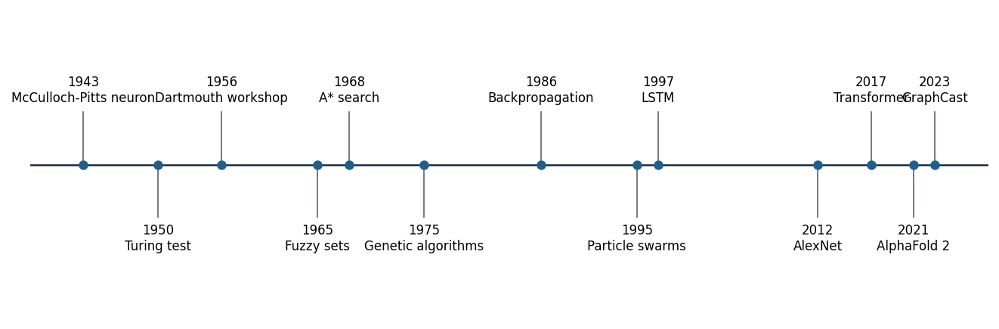
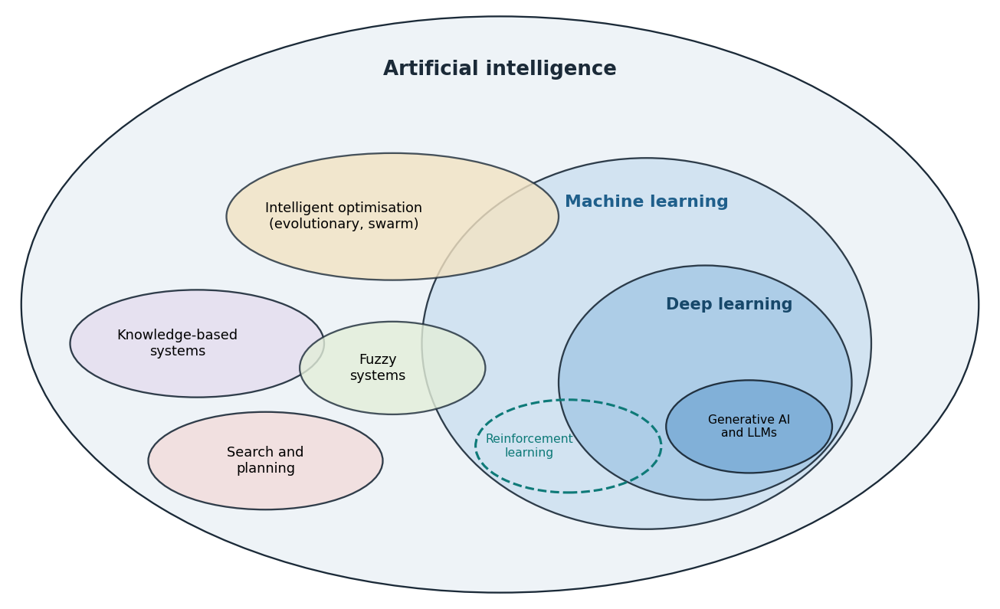
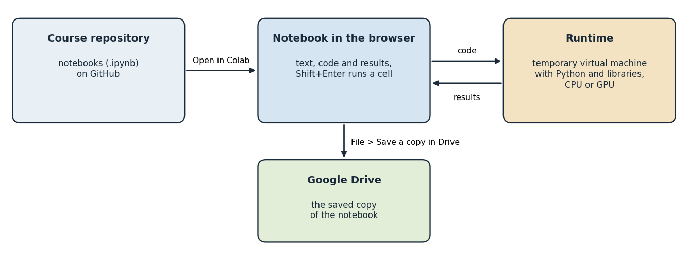

What engineers mean by artificial intelligence
In 1950, Alan Turing replaced the question of whether machines can think with a behavioural test: Can a machine answer questions in a way that an interrogator cannot tell apart from a person [1]? Five years later, the proposal for the Dartmouth summer project used the phrase artificial intelligence and stated the working conjecture of the new field: Every aspect of learning or any other feature of intelligence can in principle be described so precisely that a machine can be made to simulate it [2]. Both documents still shape the field, but neither gives an engineer a design criterion.
Russell and Norvig organise definitions of artificial intelligence along two axes: Whether the aim is to think or to act, and whether the standard is human performance or rationality [3]. Engineering practice mostly adopts the fourth combination, acting rationally. A rational agent selects, for every sequence of perceptions, the action that is expected to maximise a performance measure, given what it knows. This definition is useful because it can be tested. It asks what the system perceives, which actions it can take, and how success is measured, and these are questions that every engineering specification already answers.
Machine learning is one route to rational behaviour, not a synonym for artificial intelligence. Jordan and Mitchell describe machine learning as the study of systems that improve their performance on a task through experience [4]. A route planner that uses a hand-written heuristic, a fuzzy controller written from operator knowledge and a genetic algorithm that designs a truss are all artificial intelligence techniques without being learning systems in this sense. The course treats the whole toolbox, because engineering problems differ in how much data, knowledge and computing time they offer.
Check your understanding. Which definition does engineering practice mostly adopt?
Formulas: The rational agent
At every time step the agent receives a percept , such as a temperature reading. The agent function maps the whole sequence of percepts received so far to an action [3]:
The dots stand for all percepts between the first and the latest one. An action rarely has a certain outcome. Each possible outcome of action has a probability , read as "the probability of given ", and a utility , a number that states how good the outcome is according to the performance measure. Because some outcome must occur, the probabilities of the outcomes of one action add up to one:
The Greek capital letter sigma, , with written below it means "add the following term for every possible outcome ". The expected utility of an action is the average of the utilities of its outcomes, each weighted by its probability:
A rational agent chooses the action with the largest expected utility [3]:
The operator arg max returns the argument at which an expression is largest, here the action itself, not the largest value. The star marks the best choice.
Worked example: A heating decision under uncertainty
At 06:00 a heating agent decides whether to run the heater during the next hour. The outcome depends on the weather and on how the occupants behave, so the agent works with probabilities. Comfort is scored from 0 to 10, and the energy cost of heating is expressed on the same scale, so that the utility of an outcome is its comfort score minus the energy cost.
| Action | Outcome | Comfort score | Energy cost | Utility | |
|---|---|---|---|---|---|
| heat | comfortable | 0.9 | 10 | 3 | 7 |
| heat | too warm | 0.1 | 6 | 3 | 3 |
| off | comfortable | 0.3 | 10 | 0 | 10 |
| off | too cold | 0.7 | 2 | 0 | 2 |
Step 1. Utilities. Each utility is the comfort score minus the energy cost:
Step 2. Probabilities. Each action has two outcomes, and their probabilities add up to one: and .
Step 3. Expected utility of heating.
Step 4. Expected utility of leaving the heater off.
Step 5. Decision. Since , the rational choice is .
Step 6. Break-even energy cost. Let the energy cost be an unknown . The expected comfort of heating is , and the cost is paid in both outcomes, so
Heating stays the better choice as long as , that is, as long as . If the energy cost rises to 6 units, then , which is smaller than 4.4, and the rational choice becomes "off".
The same agent therefore changes its decision when energy prices change, without any change to its program. A utility-based agent makes such trade-offs explicit and testable. Part A of the interactive lab repeats this calculation with any probabilities, comfort scores and energy costs.
A short history of artificial intelligence
The field took shape between 1943 and 1956. McCulloch and Pitts described the neuron as a logical switching element [5], Turing proposed his behavioural test [1], and the Dartmouth proposal of 1955 gave the field its name and a research programme for a summer workshop held in 1956 [2]. Samuel's checkers program, which improved by playing games against itself, introduced the term machine learning [6], and Rosenblatt's perceptron learned to classify patterns from examples [7].
Symbolic methods dominated the following two decades: Search guided by heuristics, such as the A* algorithm [8], logical reasoning and, from the 1970s, expert systems that stored the knowledge of specialists as rules [9]. Zadeh introduced fuzzy sets in 1965 [10], and Holland developed genetic algorithms [11]. Minsky and Papert showed what single-layer perceptrons cannot compute [12]. Expectations repeatedly ran ahead of results, and funding and interest fell sharply in the 1970s and again in the late 1980s, after the commercial boom of expert systems. These periods are known as AI winters [3].
From the mid-1980s, learning from data moved to the centre. Backpropagation made multilayer networks trainable [13], support vector machines offered learning with strong theoretical guarantees [14], and statistical learning matured into a coherent discipline [15]. Nature-inspired optimisation grew with particle swarms [16] and ant colonies [17]. In 1997 the chess computer Deep Blue defeated the world champion Garry Kasparov [18], and the long short-term memory network appeared, later a standard model for sequences [19].
Since 2012, deep learning has dominated the field. A deep convolutional network won the ImageNet recognition challenge of 2012 by a wide margin [20], made possible by large labelled datasets, graphics processors and better training methods [21]. AlphaGo, published in 2016, combined deep networks, tree search and reinforcement learning and became the first program to defeat a professional player at the full game of Go [22]. The transformer architecture of 2017 [23] led to large language models [24] and to language models trained to follow instructions with human feedback, the approach behind the chat assistants that spread from late 2022 [25]. Scientific and engineering applications followed, among them protein structure prediction [26] and medium-range weather forecasting [27]. The timeline below places these milestones side by side.

The history carries a lesson for engineers. Neural networks, search, fuzzy logic and evolutionary methods are all decades old; what changed over time was the availability of data, computing power and reliable software. A method that fails today for lack of data may succeed later, and a fashionable method may be the wrong tool for a problem with little data and much physical knowledge.
Check your understanding. Neural networks were proposed in the 1940s and 1950s. Why did deep networks come to dominate only after 2012?
The family of artificial intelligence
Artificial intelligence is an umbrella term for a family of methods, and the relations between its members are easiest to see as sets. Machine learning is a subset of artificial intelligence: It covers systems that improve their performance on a task through experience [4]. Deep learning is a subset of machine learning that uses neural networks with many layers to learn representations directly from raw data such as images, signals and text [21, 28]. Generative models and large language models form a further subset of deep learning [23, 24]. Reinforcement learning, which learns to act from rewards, belongs to machine learning and overlaps with deep learning wherever deep networks represent the policy or the value function [22, 29].

Several members of the family do not learn from data in this sense. Search and planning compute sequences of actions from a model of the problem [8], knowledge-based systems reason with rules written by experts [9], and fuzzy systems turn vague linguistic knowledge into numbers [10]. Intelligent optimisation, also called nature-inspired optimisation, searches large design spaces with populations of candidate solutions that are varied and selected. Evolutionary algorithms and swarm intelligence are its two main branches [11, 16, 17]. Together with neural networks and fuzzy systems, these methods are often grouped as computational intelligence [30]. The sets overlap where methods combine: Evolutionary algorithms tune the settings of learning models or evolve neural networks, neuro-fuzzy systems learn fuzzy rules from data, and fuzzy rule bases are themselves a kind of knowledge-based system.
The figure also corrects two common misreadings. Artificial intelligence is neither the same as deep learning nor the same as chat assistants, which occupy a small corner of the family. The weeks of this course move through the whole family, as the map of the course below shows.
Check your understanding. Which statement about the family of artificial intelligence is correct?
Artificial intelligence and neighbouring fields
Artificial intelligence is a field of computer science, but its methods grew from, and feed back into, many other disciplines [3]. Statistics shares the problem of learning from data, and the two meet in statistical learning [15]. Mathematical optimisation and operations research formulate the design and scheduling problems that search and nature-inspired methods solve. Control engineering shares the question of how to act on a dynamic system, and reinforcement learning and fuzzy control lie in the overlap [29]. Neuroscience and psychology inspired neural networks from the first neuron model onwards [5, 7]. Linguistics meets artificial intelligence in natural language processing, signal and image processing meets it in speech recognition and computer vision, robotics in perception and motion planning, and data science in the handling of large and messy datasets.
For an engineer these overlaps are practical. A problem often has a well-tested solution in a neighbouring field, such as a classical controller, a regression model with confidence intervals or a linear program. A new artificial intelligence method is justified only when it does better on the performance measure that matters.
Check your understanding. A team predicts the compressive strength of concrete from the mix proportions and reports confidence intervals for its predictions. In which overlap does this work lie?
Agents, environments and performance measures
An agent perceives its environment through sensors and acts on it through actuators [3, 31]. The mapping from percept histories to actions is the agent function, and the program that implements it runs on some physical architecture. The PEAS scheme makes the design task explicit by listing the performance measure, the environment, the actuators and the sensors. The table below applies the scheme to four systems from different departments.
| System | Performance measure | Environment | Actuators | Sensors |
|---|---|---|---|---|
| Heating controller of a building | Comfort band held, energy used, number of switching cycles | Rooms, walls, outdoor weather, occupants | Boiler relay, valves | Room and outdoor thermometers |
| Autonomous haul truck in an open-pit mine | Tonnes moved per hour, zero collisions, fuel use | Haul roads, loaders, other vehicles, dust | Steering, throttle, brakes, dump bed | GNSS, lidar, radar, payload scale |
| Fabric inspection camera in a weaving mill | Defects found, false alarms, line speed kept | Moving fabric, lighting, loom vibration | Alarm, marking device, line stop | Line-scan camera, encoder |
| Earthquake early-warning agent | Warning time, missed events, false alerts | Seismic network, communication links | Alerts to trains, factories, phones | Seismometers, accelerometers |
The environment decides which techniques are feasible. It is fully observable when the sensors reveal the complete relevant state, and partially observable otherwise. It is deterministic when the next state follows from the current state and action, and stochastic when chance intervenes. It is episodic when each decision stands alone, as in inspecting one fabric image, and sequential when decisions affect the future, as in heating a building. It is static or dynamic, discrete or continuous, and it contains one agent or several [3]. A heating controller works in a partially observable, stochastic, sequential, dynamic and continuous environment: It cannot measure the heat stored in the walls, the weather is uncertain, and every switching decision changes the temperatures it will face later.
Check your understanding. A camera classifies each fabric image as defective or not, and one decision does not influence the next image. How is this task environment best described?
Formulas: Performance measures of a heating controller
A performance measure turns the goals of the designer into numbers. For a heating controller observed over time steps, let be the room temperature at step , the set point and the heater state, with when the heater is on and when it is off. The mean absolute error measures comfort; the vertical bars denote the absolute value, which turns negative deviations into positive ones:
The energy used by a heater of power in kilowatts during steps of length in hours is
in kilowatt hours, because only the steps with contribute. Each change of the heater state wears the relay and the boiler. With the state before the observed period, the number of switches is
since equals 1 exactly when the state changes. A single score combines the three goals with weights and (lambda) that express how much one kilowatt hour and one switch matter compared with one degree of error [3]:
A lower is better. Choosing the weights is a design decision, not a property of the algorithm.
Worked example: Scoring half an hour of control
A controller with set point and a 3 kW heater is observed for six steps of 5 minutes. The heater was off before the period, so . The table lists the readings and the two quantities that each row contributes.
| (°C) | ||||
|---|---|---|---|---|
| 1 | 20.3 | 1 | ||
| 2 | 20.6 | 1 | ||
| 3 | 21 | 1 | ||
| 4 | 21.4 | 1 | ||
| 5 | 21.7 | 0 | ||
| 6 | 21.3 | 0 |
Step 1. Mean absolute error. The sum of the deviations is
and dividing by gives .
Step 2. Energy. A step of 5 minutes lasts hour. The heater was on in steps, so
Step 3. Switches. The last column of the table adds up to : The heater switched on at the first step and off at the fifth.
Step 4. Combined score. With per kWh and per switch,
Two controllers can now be compared with one number, and the weights show openly which compromise the designer has chosen. The scoreboard of Part B of the interactive lab reports the same three measures for a whole week, and Part C asks for the environment properties of six engineering systems and explains each answer.
Agent architectures: From reflexes to learning
Russell and Norvig describe five agent designs of increasing capability [3]. A simple reflex agent maps the current percept to an action through condition-action rules, such as switching the heater on when the room is below the set point. A model-based reflex agent keeps an internal state that summarises what it cannot currently see. A goal-based agent considers future consequences of actions and chooses those that achieve a goal, which is the topic of search in Week 2. A utility-based agent compares outcomes with a numerical utility, for example trading comfort against energy cost. A learning agent improves any of these components from experience, which is the subject of Weeks 7 to 14.
Control engineering developed many of the same ideas under different names. Wiener's cybernetics treated the animal and the machine as feedback systems [32], and feedback control remains the most widespread form of automated decision making in engineering [33]. The thermostat illustrates the connection. A pure reflex rule switches the heater whenever the temperature crosses the set point, so noise and delays make the relay chatter on and off many times per hour. Adding a dead band, in which the heater turns on below the lower threshold and off above the upper threshold and otherwise keeps its previous state, gives the controller one bit of memory. The agent is no longer a function of the current percept alone: It is a model-based reflex agent, and the price for fewer switching cycles is a wider temperature swing.
Animation: Hysteresis in a heating agent
The animation simulates one winter day. Narrow the dead band to zero and watch the number of switching cycles rise, then widen it and watch the temperature swing grow.
Check your understanding. Why is a thermostat with a dead band a model-based reflex agent rather than a simple reflex agent?
Formulas: The room model and the thermostat rules
The room of this week is a first-order thermal system. Heat leaks to the outside at a rate proportional to the temperature difference, and the heater adds heat at a constant rate while it is on [33]:
Here is the rate of change of the room temperature in °C per minute, is the outdoor temperature, (tau) is the time constant of the room in minutes, which grows with better insulation, is the warming rate of the heater in °C per minute, and is the heater command, 1 for on and 0 for off. A computer advances the model in small steps of length by replacing the derivative with the change over one step, the explicit Euler method:
If the heater state and the outdoor temperature stay constant, the room settles at the temperature where the rate of change is zero:
The arrow reads "which gives". The model then has an exact solution, in which is the temperature at time and is Euler's number, about 2.71828:
The difference to the final temperature shrinks by the factor , about 0.37, every minutes. Solving the exact solution for with the natural logarithm gives the time needed to reach a target temperature:
The simple reflex agent switches on below the set point:
The hysteresis agent uses a dead band of width with a lower and an upper threshold:
The last case is the one bit of memory that makes it a model-based reflex agent. With constant outdoor temperature, the room heats from to towards and cools from to towards . The time formula gives the two phases of one cycle:
A cycle lasts minutes. A day of 1440 minutes then contains cycles and twice as many switches, the heater is on for the fraction of the time, called the duty cycle, and a heater of power uses kilowatt hours per day.
Worked example: Three steps of the room model
The room starts at with , minutes, per minute, minutes and the heater on, . These are the values of Python step 1. Intermediate results are rounded to six decimal places, and every step continues with the rounded value, so that the calculation can be repeated exactly with a calculator.
Step 1, from to . The four parts of the formula are computed one after the other:
Step 2, from to . The same four operations are repeated with the new temperature:
Step 3, from to . The same four operations are repeated with the new temperature:
After three steps, 15 minutes, the model predicts .
Step 4. Comparison with the exact solution. The final temperature with the heater on is
and the exact temperature after minutes is
where . The Euler result is higher by , a small error that shrinks with a shorter step .
Step 5. Time to reach 21 °C. With :
The room needs almost two hours to warm up, which is why the predictive agent of the lab preheats before cold nights.
Worked example: How the dead band sets the switching rate
The hysteresis agent holds in the same room, with a constant outdoor temperature of and a 3 kW heater. The final temperatures are with the heater on and with the heater off. Logarithms are rounded to six decimal places and times to four.
Step 1. A dead band of 1 °C.
The heater switches about 44 times a day.
Step 2. A dead band of 0.2 °C. The same formulas give
Step 3. Comparison. A dead band five times narrower makes the relay switch about five times more often, 219 instead of 44 times a day, while the duty cycle and the daily energy hardly change. The narrow band buys a smaller temperature swing with wear of the relay and the boiler. Sensor noise and delays, which the formulas ignore, make a band of zero far worse still, because the relay then chatters at every crossing of the set point [33]. Part D of the interactive lab computes these quantities for any band, room and heater.
A map of the course: Families of techniques
The course is organised around the kinds of engineering questions that artificial intelligence techniques answer. Search and planning answer the question of which sequence of actions reaches a goal at least cost [8]. Knowledge-based systems encode expert rules and explain their conclusions [9]. Fuzzy logic represents vague linguistic knowledge, such as a slightly high temperature, and turns it into smooth control actions [10, 34]. Evolutionary and swarm algorithms search large design spaces when gradients are unavailable [11, 16]. Machine learning builds models from data for prediction, classification and anomaly detection [4]. Deep learning learns representations from raw signals and images [21]. Generative models and large language models produce text, code and designs [23], and reinforcement learning learns control policies by interaction [29].
| Weeks | Technique family | Typical engineering question |
|---|---|---|
| 1 to 2 | Agents, search and planning | Which route, sequence or plan reaches the goal at least cost? |
| 3 | Knowledge-based systems | Which diagnosis or class follows from expert rules and standards? |
| 4 | Fuzzy logic and fuzzy control | How can operator knowledge in words become a controller? |
| 5 to 6 | Evolutionary and swarm optimisation | Which design or tuning is best when the objective is a black box? |
| 7 to 9 | Machine learning | What will this material, machine or process do, and is it abnormal? |
| 10 to 12 | Deep learning for tables, images and sequences | What does this image, signal or time series show? |
| 13 | Language models and generative AI | How can text, code and knowledge bases support engineering work? |
| 14 | Learning to act, physics-informed learning, responsible AI | How can a system learn control, respect physics and remain accountable? |
Check your understanding. A team must choose the order in which a drilling machine visits 200 holes on a circuit board. Which technique family fits the question best?
Artificial intelligence across the engineering disciplines
Recent results show how far the techniques of this course reach. AlphaFold predicts protein structures with accuracy close to experiment, a result that changed structural biology and drug design [26]. GraphCast, a graph neural network trained on reanalysis data, produces ten-day global weather forecasts that compete with the leading numerical models [27]. Deep reinforcement learning has controlled the magnetic coils that shape plasma in a tokamak [35], and graph networks have proposed hundreds of thousands of new stable inorganic crystals [36]. These systems combine the same building blocks that students meet here: data, models, optimisation, evaluation and domain knowledge.
Most engineering applications are less spectacular and more common. Mechanical engineers predict failures from vibration and temperature, civil engineers estimate concrete strength from mix proportions, food engineers grade grains from images, environmental engineers forecast emissions, and mining engineers anticipate seismic hazards in underground workings. The course uses public datasets from these fields, several of them produced in Türkiye, so that every department meets its own problems. Türkiye's National Artificial Intelligence Strategy names the training of a workforce able to apply artificial intelligence in all sectors as a strategic priority [37], which is the aim of an engineering course of this kind.
How to study this course
Every week follows the same cycle of reading, exploring, building, checking and reflecting. The lecture page contains animations and knowledge checks, the lab turns one idea into a simulation, and the Colab notebook rebuilds the idea in Python with real or realistic data. The overview page of each week connects these materials: It states the learning outcomes and the study path and lists the discipline challenges and the tasks. Earlier work on intelligent support for self-learning in computer engineering courses showed the value of matching materials and pacing to the learner when face-to-face time is limited [38]. The course therefore teaches Python in fourteen steps, one per week, and marks every further piece of Python in the notebooks, so that students without programming experience can learn the language while solving engineering problems, and students with experience can move quickly to the challenges. Each step opens the Colab notebook of its week and is printed with its outputs at the end of the lecture notes.
Engineering judgement: When not to use artificial intelligence
A well-validated physical model, a standard or a simple rule often beats a learned model, because it extrapolates, it is explainable and it needs no data. Artificial intelligence earns its place when the physics is unknown or too expensive to simulate, when expert knowledge is vague, when the search space is too large for enumeration, or when perception from images, signals or text is required. Even then, the system must be tested against the performance measure, its failure modes must be understood, and a person must remain accountable for its use [39, 40]. Training large models also has an energy cost that belongs in the engineering trade-off [41]. Week 14 returns to these questions with safety, standards and regulation.
Check your understanding. In which situation is a learned model least justified?
Python, programming environments and Google Colab
Python is a general-purpose, high-level programming language created by Guido van Rossum in the early 1990s and developed today as open source software under the Python Software Foundation [42]. Its syntax is compact and readable, blocks are marked by indentation, and programs run without a separate compilation step. The main reason for its role in artificial intelligence is its ecosystem: The libraries used in this course, NumPy for arrays [43], pandas for tables [44], Matplotlib for figures [45], scikit-learn for machine learning [46] and PyTorch for deep learning [47], are all Python libraries. The official tutorial is the reference for the language itself [48].
Python code can be written and run in several environments. The interactive interpreter executes one line at a time and suits quick calculations. Scripts are text files with the extension .py that run from a terminal, which suits programs that run repeatedly or on servers. Integrated development environments such as Visual Studio Code, PyCharm and Spyder combine an editor, a debugger and project tools. Notebooks, such as Jupyter Notebook and JupyterLab, mix explanatory text, code, results and figures in one document, which makes them well suited to learning, exploration and reproducible reports [49]. Distributions such as Anaconda install Python together with the scientific libraries on a personal computer.
Google Colaboratory, Colab for short, is the environment of this course. It is a hosted Jupyter notebook service that runs in a web browser, needs no installation and gives free access to computing resources, including graphics processors, within usage limits [50]. The Open in Colab badge of every week opens the notebook directly from the course repository on GitHub. A notebook runs on a virtual machine in the cloud, the runtime, which comes with Python and the common libraries installed; further packages can be added with a cell such as !pip install ucimlrepo. The runtime is temporary: It stops after a period of inactivity or when it reaches a maximum lifetime [50], and files written to it disappear with it. Work is therefore kept with File > Save a copy in Drive, and a graphics processor is selected with Runtime > Change runtime type when a notebook trains larger networks.

A first session takes about fifteen minutes. Open the notebook of this week with its badge, sign in with a Google account and save a copy in Drive, so that changes are kept. Run the cells from the top with Shift+Enter and read each output before moving on. When a notebook stops behaving as expected, restarting the runtime from the Runtime menu and running all cells again from the top returns it to a clean state. Python step 1, taught at the start of this week's notebook and printed at the end of the lecture notes, opens the Python strand of the course, one step per week.
Check your understanding. A student saves a results file in a Colab notebook, closes the browser and returns the next day. The file is gone. Why?
Python step 1: Values, variables and decisions
The Python step of this week is part of the Colab notebook, where every explanation stands next to a cell that runs it and the step closes with a quick check and exercises with immediate feedback. The printable lecture notes contain the same step together with the outputs of its code. The Colab button below opens the notebook at the step. Run the setup cell just above the step first, since the exercises use its check function.
Review cards
Select a card to turn it over.
Continue the week
The week continues with the simulation and the self-assessment of the interactive lab and with the Python step and the hands-on work of the Colab notebook. The week overview lists the discipline challenges, the weekly task and the research assignment.
Interactive lab Colab notebook Self-assessment Week overview and tasks
References
[1] Turing, A. M. (1950). Computing machinery and intelligence. Mind, 59(236), 433-460. https://doi.org/10.1093/mind/LIX.236.433
[2] McCarthy, J., Minsky, M. L., Rochester, N., & Shannon, C. E. (2006). A proposal for the Dartmouth summer research project on artificial intelligence, August 31, 1955. AI Magazine, 27(4), 12-14. https://doi.org/10.1609/aimag.v27i4.1904
[3] Russell, S., & Norvig, P. (2021). Artificial Intelligence: A Modern Approach (4th ed.). Pearson.
[4] Jordan, M. I., & Mitchell, T. M. (2015). Machine learning: Trends, perspectives, and prospects. Science, 349(6245), 255-260. https://doi.org/10.1126/science.aaa8415
[5] McCulloch, W. S., & Pitts, W. (1943). A logical calculus of the ideas immanent in nervous activity. The Bulletin of Mathematical Biophysics, 5(4), 115-133. https://doi.org/10.1007/BF02478259
[6] Samuel, A. L. (1959). Some studies in machine learning using the game of checkers. IBM Journal of Research and Development, 3(3), 210-229. https://doi.org/10.1147/rd.33.0210
[7] Rosenblatt, F. (1958). The perceptron: A probabilistic model for information storage and organization in the brain. Psychological Review, 65(6), 386-408. https://doi.org/10.1037/h0042519
[8] Hart, P. E., Nilsson, N. J., & Raphael, B. (1968). A formal basis for the heuristic determination of minimum cost paths. IEEE Transactions on Systems Science and Cybernetics, 4(2), 100-107. https://doi.org/10.1109/TSSC.1968.300136
[9] Buchanan, B. G., & Shortliffe, E. H. (Eds.) (1984). Rule-Based Expert Systems: The MYCIN Experiments of the Stanford Heuristic Programming Project. Addison-Wesley.
[10] Zadeh, L. A. (1965). Fuzzy sets. Information and Control, 8(3), 338-353. https://doi.org/10.1016/S0019-9958(65)90241-X
[11] Holland, J. H. (1992). Adaptation in Natural and Artificial Systems (2nd ed.). MIT Press. First edition 1975, University of Michigan Press.
[12] Minsky, M., & Papert, S. (1969). Perceptrons: An Introduction to Computational Geometry. MIT Press.
[13] Rumelhart, D. E., Hinton, G. E., & Williams, R. J. (1986). Learning representations by back-propagating errors. Nature, 323(6088), 533-536. https://doi.org/10.1038/323533a0
[14] Cortes, C., & Vapnik, V. (1995). Support-vector networks. Machine Learning, 20(3), 273-297. https://doi.org/10.1007/BF00994018
[15] Hastie, T., Tibshirani, R., & Friedman, J. (2009). The Elements of Statistical Learning: Data Mining, Inference, and Prediction (2nd ed.). Springer. https://doi.org/10.1007/978-0-387-84858-7
[16] Kennedy, J., & Eberhart, R. (1995). Particle swarm optimization. In Proceedings of ICNN'95, International Conference on Neural Networks, Vol. 4 (pp. 1942-1948). IEEE. https://doi.org/10.1109/ICNN.1995.488968
[17] Dorigo, M., Maniezzo, V., & Colorni, A. (1996). Ant system: Optimization by a colony of cooperating agents. IEEE Transactions on Systems, Man, and Cybernetics, Part B, 26(1), 29-41. https://doi.org/10.1109/3477.484436
[18] Campbell, M., Hoane, A. J., & Hsu, F.-h. (2002). Deep Blue. Artificial Intelligence, 134(1-2), 57-83. https://doi.org/10.1016/S0004-3702(01)00129-1
[19] Hochreiter, S., & Schmidhuber, J. (1997). Long short-term memory. Neural Computation, 9(8), 1735-1780. https://doi.org/10.1162/neco.1997.9.8.1735
[20] Krizhevsky, A., Sutskever, I., & Hinton, G. E. (2017). ImageNet classification with deep convolutional neural networks. Communications of the ACM, 60(6), 84-90. https://doi.org/10.1145/3065386
[21] LeCun, Y., Bengio, Y., & Hinton, G. (2015). Deep learning. Nature, 521(7553), 436-444. https://doi.org/10.1038/nature14539
[22] Silver, D., Huang, A., Maddison, C. J., et al. (2016). Mastering the game of Go with deep neural networks and tree search. Nature, 529(7587), 484-489. https://doi.org/10.1038/nature16961
[23] Vaswani, A., Shazeer, N., Parmar, N., Uszkoreit, J., Jones, L., Gomez, A. N., Kaiser, Ł., & Polosukhin, I. (2017). Attention is all you need. In Advances in Neural Information Processing Systems 30 (pp. 5998-6008). https://arxiv.org/abs/1706.03762
[24] Brown, T. B., Mann, B., Ryder, N., et al. (2020). Language models are few-shot learners. In Advances in Neural Information Processing Systems 33 (pp. 1877-1901). https://arxiv.org/abs/2005.14165
[25] Ouyang, L., Wu, J., Jiang, X., et al. (2022). Training language models to follow instructions with human feedback. In Advances in Neural Information Processing Systems 35 (pp. 27730-27744). https://arxiv.org/abs/2203.02155
[26] Jumper, J., Evans, R., Pritzel, A., et al. (2021). Highly accurate protein structure prediction with AlphaFold. Nature, 596(7873), 583-589. https://doi.org/10.1038/s41586-021-03819-2
[27] Lam, R., Sanchez-Gonzalez, A., Willson, M., et al. (2023). Learning skillful medium-range global weather forecasting. Science, 382(6677), 1416-1421. https://doi.org/10.1126/science.adi2336
[28] Goodfellow, I., Bengio, Y., & Courville, A. (2016). Deep Learning. MIT Press.
[29] Sutton, R. S., & Barto, A. G. (2018). Reinforcement Learning: An Introduction (2nd ed.). MIT Press.
[30] Engelbrecht, A. P. (2007). Computational Intelligence: An Introduction (2nd ed.). Wiley. https://doi.org/10.1002/9780470512517
[31] Wooldridge, M., & Jennings, N. R. (1995). Intelligent agents: Theory and practice. The Knowledge Engineering Review, 10(2), 115-152. https://doi.org/10.1017/S0269888900008122
[32] Wiener, N. (1961). Cybernetics: Or Control and Communication in the Animal and the Machine (2nd ed.). MIT Press.
[33] Åström, K. J., & Murray, R. M. (2021). Feedback Systems: An Introduction for Scientists and Engineers (2nd ed.). Princeton University Press.
[34] Mamdani, E. H., & Assilian, S. (1975). An experiment in linguistic synthesis with a fuzzy logic controller. International Journal of Man-Machine Studies, 7(1), 1-13. https://doi.org/10.1016/S0020-7373(75)80002-2
[35] Degrave, J., Felici, F., Buchli, J., et al. (2022). Magnetic control of tokamak plasmas through deep reinforcement learning. Nature, 602(7897), 414-419. https://doi.org/10.1038/s41586-021-04301-9
[36] Merchant, A., Batzner, S., Schoenholz, S. S., et al. (2023). Scaling deep learning for materials discovery. Nature, 624(7990), 80-85. https://doi.org/10.1038/s41586-023-06735-9
[37] Presidency of the Republic of Türkiye Digital Transformation Office, & Ministry of Industry and Technology (2021). National Artificial Intelligence Strategy 2021-2025 (Ulusal Yapay Zekâ Stratejisi 2021-2025). Ankara. Action plan updated for 2024-2025. https://www.cbddo.gov.tr/UYZS
[38] Kose, U., & Arslan, A. (2017). Optimization of self-learning in computer engineering courses: An intelligent software system supported by artificial neural network and vortex optimization algorithm. Computer Applications in Engineering Education, 25(1), 142-156. https://doi.org/10.1002/cae.21787
[39] Amodei, D., Olah, C., Steinhardt, J., Christiano, P., Schulman, J., & Mané, D. (2016). Concrete problems in AI safety. arXiv preprint arXiv:1606.06565. https://arxiv.org/abs/1606.06565
[40] Kose, U. (2018). Are we safe enough in the future of artificial intelligence? A discussion on machine ethics and artificial intelligence safety. BRAIN. Broad Research in Artificial Intelligence and Neuroscience, 9(2), 184-197.
[41] Strubell, E., Ganesh, A., & McCallum, A. (2019). Energy and policy considerations for deep learning in NLP. In Proceedings of the 57th Annual Meeting of the Association for Computational Linguistics (pp. 3645-3650). https://doi.org/10.18653/v1/P19-1355
[42] Python Software Foundation (2026). History and license (Python 3 documentation). https://docs.python.org/3/license.html
[43] Harris, C. R., Millman, K. J., van der Walt, S. J., et al. (2020). Array programming with NumPy. Nature, 585(7825), 357-362. https://doi.org/10.1038/s41586-020-2649-2
[44] McKinney, W. (2010). Data structures for statistical computing in Python. In Proceedings of the 9th Python in Science Conference (pp. 56-61). https://doi.org/10.25080/Majora-92bf1922-00a
[45] Hunter, J. D. (2007). Matplotlib: A 2D graphics environment. Computing in Science & Engineering, 9(3), 90-95. https://doi.org/10.1109/MCSE.2007.55
[46] Pedregosa, F., Varoquaux, G., Gramfort, A., et al. (2011). Scikit-learn: Machine learning in Python. Journal of Machine Learning Research, 12, 2825-2830.
[47] Paszke, A., Gross, S., Massa, F., et al. (2019). PyTorch: An imperative style, high-performance deep learning library. In Advances in Neural Information Processing Systems 32 (pp. 8024-8035). https://arxiv.org/abs/1912.01703
[48] Python Software Foundation (2026). The Python Tutorial (Python 3 documentation). https://docs.python.org/3/tutorial/
[49] Kluyver, T., Ragan-Kelley, B., Pérez, F., et al. (2016). Jupyter Notebooks: A publishing format for reproducible computational workflows. In Positioning and Power in Academic Publishing: Players, Agents and Agendas (pp. 87-90). IOS Press. https://doi.org/10.3233/978-1-61499-649-1-87
[50] Google (2026). Google Colaboratory: Frequently asked questions. https://research.google.com/colaboratory/faq.html